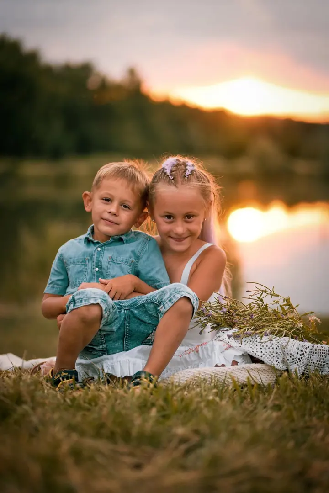
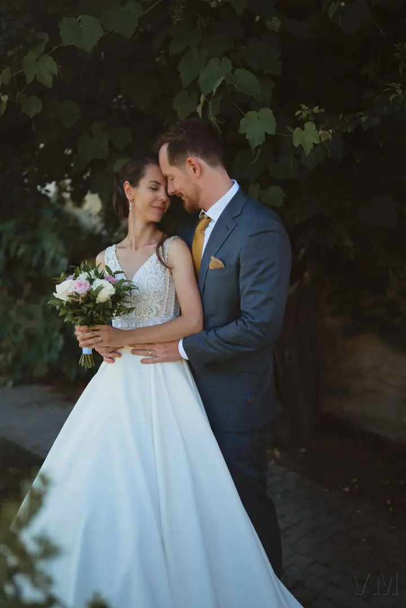
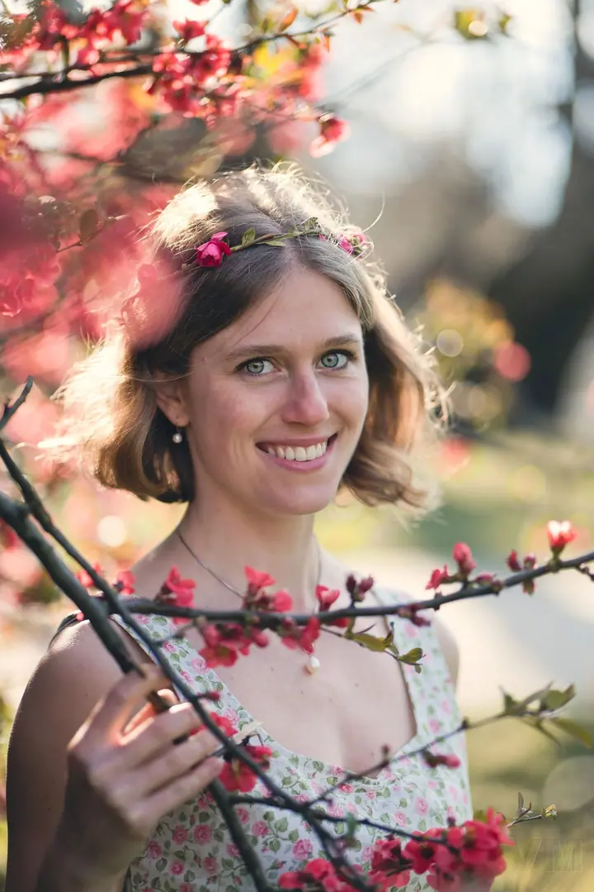

Rodinné focení
Focení rodičů s dětmi, sourozenců i celé rodiny. Nejčastěji venku v přírodě, kde se děti můžou volně pohybovat a nikdo nemusí stát strnule.

Jmenuji se Veronika Martínková a fotím rodiny, svatby i portréty. Na Instagramu mě najdete jako Vyfoceno mámou a nejraději fotím venku, v měkkém světle podvečera.
Rezervovat termínFotím hlavně rodiny. Sourozence, kteří se k sobě tulí, maminky s dětmi na louce, celé rodiny na podzimní procházce. Nechávám vás být spolu a fotím to, co se mezi vámi děje.


Ráda fotím i svatby a páry. Obřad, první tanec, chvíli jen pro vás dva venku na louce nebo pod stromy. Kromě toho dělám portréty a každý rok vánoční focení.
Nejčastěji fotím ve Velkém Přítočně a okolí, v přírodě a v přirozeném světle. Když je venku nevlídno, vyfotíme se i u čistého světlého pozadí.
Co fotím
Focení rodičů s dětmi, sourozenců i celé rodiny. Nejčastěji venku v přírodě, kde se děti můžou volně pohybovat a nikdo nemusí stát strnule.
Fotím obřad, oslavu i společné chvíle novomanželů venku. Focení svatby začíná na 3 000 Kč.
Klidné focení pro dva, třeba na podzimní procházce nebo na louce při zapadajícím slunci.
Přirozené portréty v exteriéru i u čistého pozadí. Pro sebe, na profil nebo jako dárek.
Postup
Napište mi nebo zavolejte, o jaké focení máte zájem a kdy by se vám hodilo. Domluvíme termín i místo.
Poradím vám s výběrem místa, s oblečením a s tím, jak naladit děti, aby si focení užily.
Fotíme v klidu a bez spěchu. Většinou venku a ideálně v hezkém světle, kdy se k sobě můžete přirozeně chovat.
Fotky pečlivě vyberu a upravím. Pak vám je předám, ať si je můžete prohlížet, tisknout a rozdávat blízkým.
Otázky
Nejčastěji ve Velkém Přítočně a okolí, venku v přírodě. Místo spolu vybereme podle toho, co je vám blízké.
Svatební focení začíná na 3 000 Kč. Přesnou cenu vám ráda spočítám podle toho, jak dlouho mám být s vámi.
S tím počítám. Nechám je hrát si a běhat, nejhezčí fotky často vzniknou právě ve chvíli, kdy na foťák zapomenou.
Ano, vánoční focení dělám pravidelně. Termíny se rychle plní, proto se mi ozvěte s předstihem.